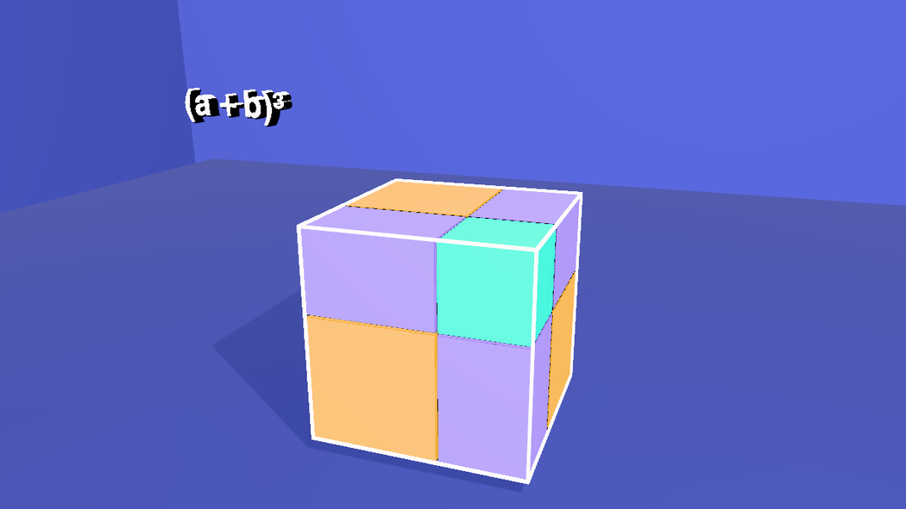
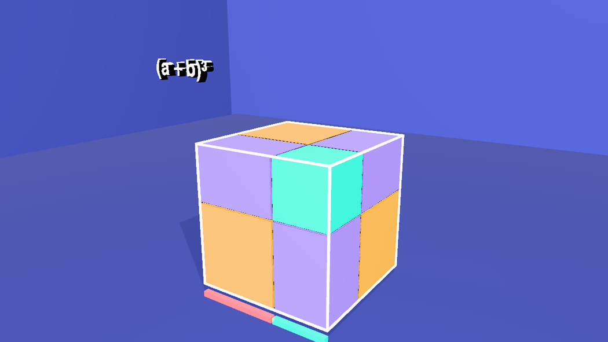
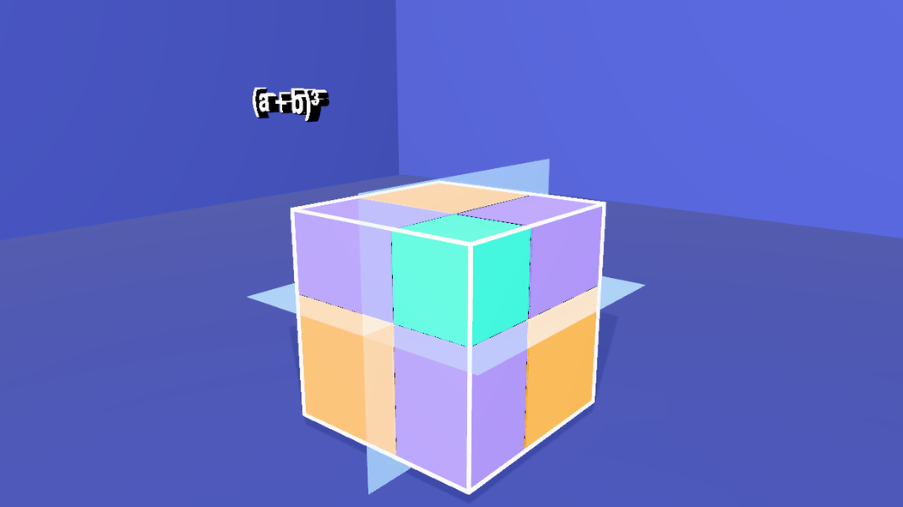
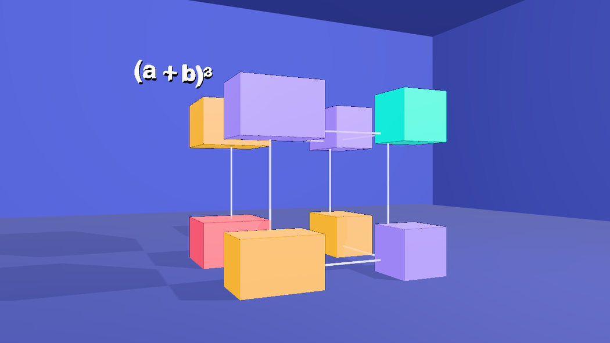
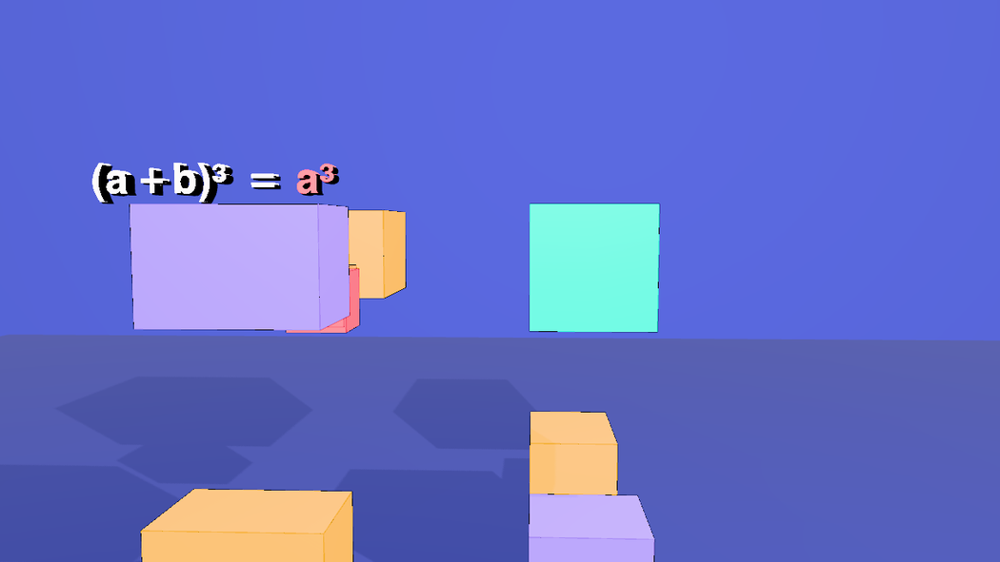
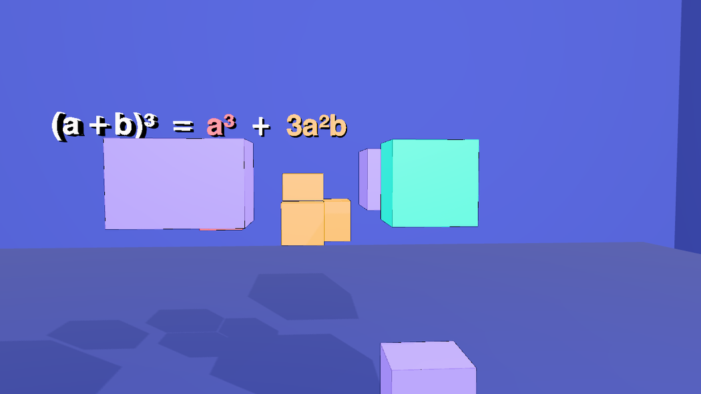
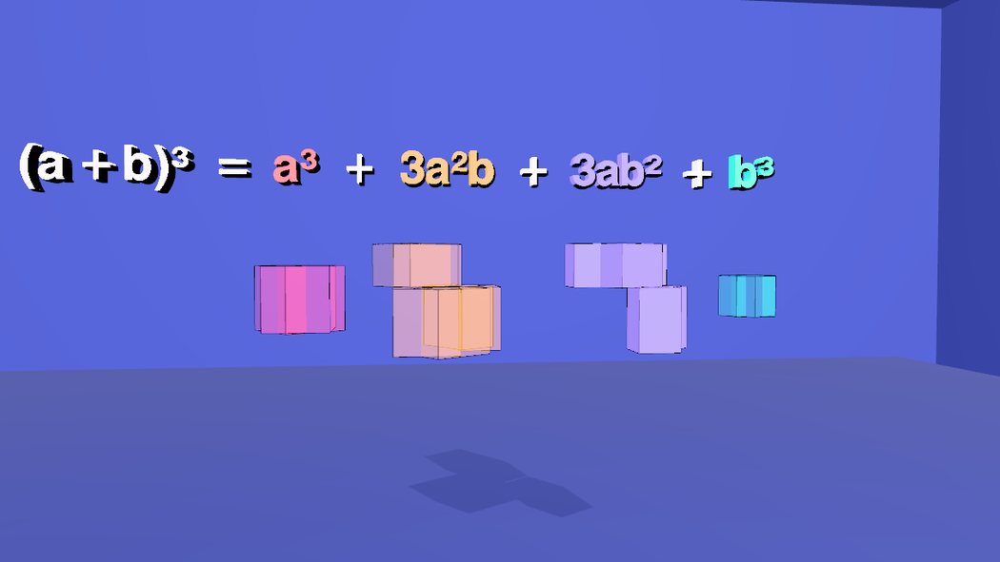
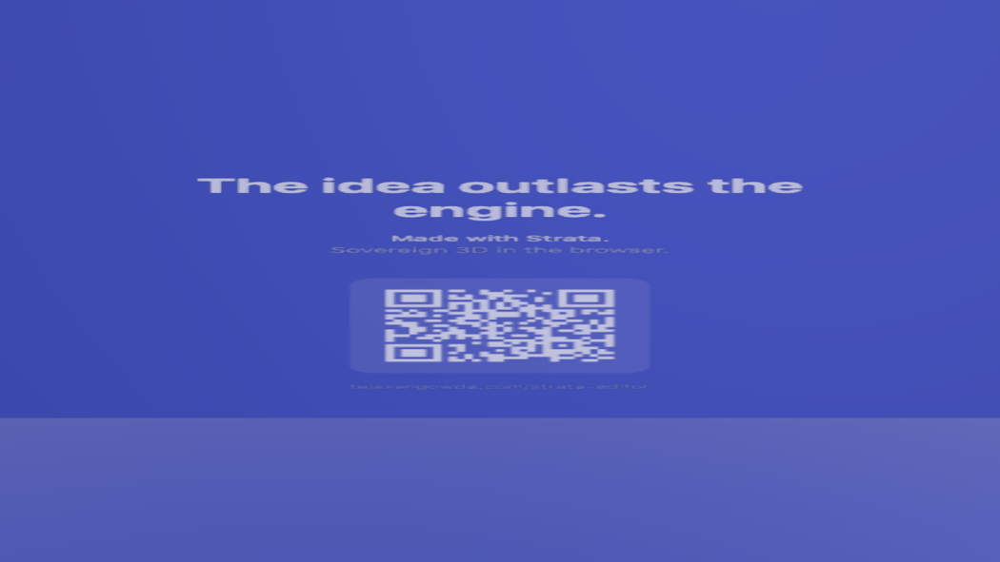

Build the (a + b)³ proof in 3D
A 49-second visual proof that (a + b)³ = a³ + 3a²b + 3ab² + b³, with no numbers in it. It starts with the cube whole: a cube whose side is cut into a long part a and a short part b. The cube falls apart into eight blocks of four kinds, the blocks sort themselves by kind, and each kind lands under its own term of the expanded equation, each term in the colour of its blocks. Unlike the flat Pythagorean short, this one needs depth: solid blocks, shadows on a floor and a wall, a glass cube, five cameras that cut between each other, cutting planes, an x-ray that turns the other blocks to glass, and an equation that grows as the blocks arrive. It is built by hand with the JS Shell. Open the editor, load an empty scene, open the Shell tab and paste each block in order, or open the finished scene, a+b-cubed.json (the last step).
1 The plan: four kinds of block, four colours
Cut each edge of a big cube into two parts, a long one (a) and a short one (b). The three cuts through the cube make 2 × 2 × 2 = 8 blocks. Count them by how many of their three sides are long:
| Colour | Blocks | Shape | Term |
|---|---|---|---|
| coral | 1 | a × a × a | a³ |
| gold | 3 slabs | a × a × b | 3a²b |
| violet | 3 bars | a × b × b | 3ab² |
| aqua | 1 | b × b × b | b³ |
The volume of the big cube is (a + b)³, and it is the sum of its eight blocks. That is the whole proof; the film only has to let you see it, so it starts with the whole cube, cuts it, and takes it apart. The film never states a length: a is drawn 3 units long and b 2 units long in the code below, only so that the two parts look different.
Each block is a single box, not a pile of unit cubes, so the whole scene is a few dozen objects. The plan for the clock (all times in seconds):
| Time | What happens |
|---|---|
| 0.8 | The title (a + b)³ appears over the whole cube |
| 5.8 – 7.6 | A ruler under the cube shows its side split into a (coral) and b (aqua) |
| 8.3 – 11.4 | Three pale planes slide in, one per axis: the cuts |
| 10.4 – 12.6 | The cube falls apart: each block steps away from the middle, towards the side where it was cut. The glass cube stays behind, faint |
| 19.4 – 22.2 | = a³ appears, and the coral cube flies to its place under it, smaller |
| 24.6 – 27.4 | + 3a²b, and the three gold slabs fly under it and close up into the shape they made in the cube |
| 29.6 – 32.4 | The same for the three violet bars; + 3ab² |
| 34.7 – 37.5 | The aqua cube; + b³. Every kind is under its term |
| 40 – 45.8 | The x-ray: each kind of block in turn, the rest turned to glass, while the equation is read out |
| 46.5 | Cut to the end card |
The cameras cut at 10, 18.2, 34.3 and 46.5 s. Everything below is a paste into the Shell, in order, into a scene that is empty.
2 A room, a floor and two lights
The same trick as in the Pythagorean short: a box seen from the inside is a room with four walls, so every camera has a wall behind the blocks. This time there is also a floor, just under the cube, for the shadows to land on, and the key light sits up and to the right, so the blocks throw their shadows to the left and back. The fill light is a HemisphereLight; the Shell does not have that class as a bare name, so it is written THREE.HemisphereLight.
// a room around the scene: walls, ceiling and floor in one box seen from the inside
const room = new Mesh(new BoxGeometry(80, 40, 80),
new MeshStandardMaterial({ color: 0x2b3680, roughness: 0.95, metalness: 0, side: THREE.BackSide }));
room.name = 'Room';
room.position.set(0, 2, 0);
room.receiveShadow = true;
editor.execute(new AddObjectCommand(editor, room));
// a floor just under the cube, so the shadows have somewhere to land
const floor = new Mesh(new PlaneGeometry(60, 60), new MeshStandardMaterial({ color: 0x232d70, roughness: 0.9, metalness: 0 }));
floor.name = 'Floor';
floor.rotation.x = -Math.PI / 2;
floor.position.y = -3;
floor.receiveShadow = true;
editor.execute(new AddObjectCommand(editor, floor));
// one key light up and to the right, one soft fill
const key = new PointLight(0xfff1dd, 5.5, 0, 0);
key.name = 'KeyLight';
key.position.set(7, 11, 9);
key.castShadow = true;
key.shadow.mapSize.set(2048, 2048);
key.shadow.bias = -0.0004;
key.shadow.intensity = 0.6;
key.shadow.radius = 4;
key.shadow.camera.near = 0.5;
key.shadow.camera.far = 90;
editor.execute(new AddObjectCommand(editor, key));
editor.execute(new AddObjectCommand(editor, Object.assign(new THREE.HemisphereLight(0xdde6ff, 0x6a78c8, 1.2), { name: 'FillLight' })));3 The eight blocks
One loop builds all eight, and they are built where they belong, so the cube is whole from the start. The blocks of one kind live in one group (g-a3, g-a2b, g-ab2, g-b3, each at the middle of its blocks and with the blocks placed relative to it), so that later the whole kind can fly, shrink and turn as one body; each block remembers where it sits in the cube (userData.home), for the way back. A block's name says what it is: a3, b3, a2b-x (the slab whose short side, b, runs along x), ab2-x (the bar whose long side runs along x). The trick is span(len): along each axis the long part sits at the low end of the big cube and the short part at the high end, so a block's position follows from its three lengths. Every block gets its own material, so that it can fade on its own, and a black border (hasEdgeOutline), which is what keeps neighbouring blocks of the same colour apart.
// (a + b)^3 = a^3 + 3a^2b + 3ab^2 + b^3: a big cube whose side is cut into a long part (a) and a short part (b)
// is cut by those cuts into 8 blocks of 4 kinds. a is drawn 3 long and b 2 long; the film never says so.
const A = 3, B = 2, H = (A + B) / 2, GAP = 0.05;
const COLOR = { a3: 0xff4d6a, a2b: 0xffb703, ab2: 0xa78bfa, b3: 0x14e0c8 };
const span = len => (len === A ? [-H, -H + A] : [-H + A, H]); // an a-length sits at the low end of its axis, a b-length at the high end
// name, kind, then the length of the block along x, y and z
const PIECES = [
['a3', 'a3', A, A, A],
['a2b-x', 'a2b', B, A, A], ['a2b-y', 'a2b', A, B, A], ['a2b-z', 'a2b', A, A, B], // three slabs: a x a x b
['ab2-x', 'ab2', A, B, B], ['ab2-y', 'ab2', B, A, B], ['ab2-z', 'ab2', B, B, A], // three bars: a x b x b
['b3', 'b3', B, B, B]
];
// each kind lives in its own group, so that later the whole kind can move, shrink and turn as one piece.
// A group sits at the middle of its blocks, and the blocks inside it are placed relative to that middle.
const boxes = PIECES.map(([name, kind, lx, ly, lz]) => ({ name, kind, lx, ly, lz, x: span(lx), y: span(ly), z: span(lz) }));
const KINDS = ['a3', 'a2b', 'ab2', 'b3'];
for (const kind of KINDS) {
const mine = boxes.filter(b => b.kind === kind);
const lo = [0, 1, 2].map(i => Math.min(...mine.map(b => [b.x, b.y, b.z][i][0])));
const hi = [0, 1, 2].map(i => Math.max(...mine.map(b => [b.x, b.y, b.z][i][1])));
const centre = lo.map((v, i) => (v + hi[i]) / 2);
const group = new Group();
group.name = 'g-' + kind;
group.position.set(...centre);
const color = COLOR[kind];
for (const b of mine) {
const block = new Mesh(new BoxGeometry(b.lx - GAP, b.ly - GAP, b.lz - GAP),
new MeshStandardMaterial({ color, emissive: color, emissiveIntensity: 0.25, roughness: 0.5, metalness: 0.1 }));
block.name = b.name;
block.position.set((b.x[0] + b.x[1]) / 2 - centre[0], (b.y[0] + b.y[1]) / 2 - centre[1], (b.z[0] + b.z[1]) / 2 - centre[2]);
block.userData.home = block.position.toArray(); // where it sits in the whole cube, for the way back
block.castShadow = block.receiveShadow = true;
block.userData.hasEdgeOutline = true; // a black border, drawn by the viewport
group.add(block);
}
editor.execute(new AddObjectCommand(editor, group));
}
$S('#a3').addClass('a3');
$S('#b3').addClass('b3');
$S('#a2b-x, #a2b-y, #a2b-z').addClass('a2b');
$S('#ab2-x, #ab2-y, #ab2-z').addClass('ab2');
$S('.a3, .a2b, .ab2, .b3').addClass('piece').nodes.length // 8
Each kind also gets a class, so that later one line can address all three slabs (.a2b) or all three bars (.ab2).
4 The glass cube and the ruler
A frame of twelve thin white boxes marks the edges of the big cube. It is what the explosion leaves behind, a faint reminder of the whole. Under the front edge a ruler shows the split of one side: a in coral, the colour of the a-cube, and b in aqua, the colour of the b-cube, so the two lengths carry their colours into the cubes made of them.
// the target: a glass cube with bright edges, and a ruler under it that shows how its side splits into a and b
const edge = (w, h, d, x, y, z) => {
const m = new Mesh(new BoxGeometry(w, h, d), new MeshStandardMaterial({ color: 0xffffff, emissive: 0xffffff, emissiveIntensity: 0.9 }));
m.name = 'FrameEdge';
m.position.set(x, y, z);
return m;
};
const frame = new Group();
frame.name = 'Frame';
const t = 0.06, h = 2.5;
for (const y of [-h, h]) for (const z of [-h, h]) frame.add(edge(5 + t, t, t, 0, y, z)); // 4 edges along x
for (const x of [-h, h]) for (const z of [-h, h]) frame.add(edge(t, 5 + t, t, x, 0, z)); // 4 along y
for (const x of [-h, h]) for (const y of [-h, h]) frame.add(edge(t, t, 5 + t, x, y, 0)); // 4 along z
editor.execute(new AddObjectCommand(editor, frame));
$S('#Frame > *').addClass('frameedge');
// the ruler: a in coral (the colour of the a-cube), b in aqua (the b-cube), end to end along the front bottom edge
const bar = (len, x, color, name) => {
const m = new Mesh(new BoxGeometry(len - 0.06, 0.2, 0.2), new MeshStandardMaterial({ color, emissive: color, emissiveIntensity: 0.4 }));
m.name = name;
m.position.set(x, -2.85, 2.5);
return m;
};
editor.execute(new AddObjectCommand(editor, bar(3, -1, 0xff4d6a, 'RulerA')));
editor.execute(new AddObjectCommand(editor, bar(2, 1.5, 0x14e0c8, 'RulerB')));
$S('#RulerA, #RulerB').addClass('ruler');
5 Five cameras
A shot camera is an ordinary camera with a track of keys: $S('#camHero').setKeys([{ t, pos, lookAt }, …], { smooth: true }) plays one smooth curve through them (see Editing camera moves). Writing keys by hand is tedious, so orbit writes them: azimuth, radius and height from the start to the end of a move, aimed at a point, one key every few seconds. There are four working cameras and the end-card camera: a slow hero view of the whole cube, a low view for the explosion (it has to be further back, since the blocks fly out), and two front views for the row, aimed at the row and its equation. They all stay in the front half-circle (azimuth −30° to 40°), because the equation is a row of text that faces the front, and it would shrink to a sliver from the side.
// five cameras: a slow hero view of the whole cube, a low view for the explosion, two front views for the rows, and one for the end card
function addCamera(name, fov) {
const cam = new THREE.PerspectiveCamera(fov, 16 / 9, 0.1, 400);
cam.name = name;
editor.execute(new AddObjectCommand(editor, cam));
return cam;
}
// a move around a point: azimuth in degrees (0 = straight in front), a radius and a height, one key every `step` seconds
function orbit(cam, t0, t1, az0, az1, radius, y0, y1, aim, step = 3) {
const n = Math.max(1, Math.round((t1 - t0) / step));
const keys = [];
for (let i = 0; i <= n; i++) {
const u = i / n, az = THREE.MathUtils.degToRad(az0 + (az1 - az0) * u);
keys.push({ t: t0 + (t1 - t0) * u, pos: [radius * Math.sin(az), y0 + (y1 - y0) * u, radius * Math.cos(az)], lookAt: aim });
}
$S('#' + cam.name).setKeys(keys, { smooth: true });
cam.position.set(...keys[0].pos); // where the camera waits before its move starts
cam.lookAt(...aim);
}
const hero = addCamera('camHero', 40), low = addCamera('camLow', 40), front = addCamera('camFront', 40);
const last = addCamera('camFinal', 40), end = addCamera('camCard', 50);
orbit(hero, 0.001, 10, 15, 40, 15.5, 6.5, 5.5, [0, 1.4, 0]); // round the front corner of the whole cube
orbit(low, 10, 18.2, -30, -12, 20, 0.5, 2, [0, 1, 0]); // from the left and low, while the blocks fly apart
orbit(front, 18.2, 34.3, 12, -6, 16, 4, 3, [1.5, 2.6, 0], 4); // from the front, aimed at the row of blocks and its equation
orbit(last, 34.3, 46.5, -6, 0, 14.5, 3, 3, [1.5, 2.6, 0], 4);
end.position.set(14.6, 0.5, 0); // faces the end card, which hangs on the right-hand wall
end.lookAt(30, 0.5, 0);Before its first key a camera waits where its position and lookAt say, so each one is also placed at the start of its move.
6 The equation, in colour
The equation is nine labels in a row: the title, =, four terms and three plus signs. Each term has the colour of its blocks. They are ordinary objects hung above the cube, which is why the cameras stay in the front half-circle. Open Stencils → Mesh → Text and click it once; the block copies that label eight times, so every copy has the same font.
A label's text begins at the label's own origin, so each label's x is where its text starts. The widths come from the font (the sum of the glyph advances, in units of the font size, times the label's scale): (a + b)³ is 4.72 wide, = and + 0.83, a³ 1.35, 3a²b and 3ab² 3.00, b³ 1.39. At a scale of 0.6 and a gap of 0.45 between labels the row is 13.7 wide, which fits in the frame of every camera, and the first label starts at −6.83.
// the equation, as nine labels in a row above the cube: each term in the colour of its pieces.
// Text starts at a label's own origin, so each label's x is where its text begins: the widths come from the font.
const tpl = $S('#Text').nodes[0];
tpl.material.emissiveIntensity = 0.7;
const WHITE = 0xffffff, C = { a3: 0xff4d6a, a2b: 0xffb703, ab2: 0xa78bfa, b3: 0x14e0c8 };
const ROW = [ // name, colour, x where the text begins
['lead', WHITE, -6.83], ['eq', WHITE, -3.55], ['tA', C.a3, -2.6], ['p1', WHITE, -1.34], ['tB', C.a2b, -0.39],
['p2', WHITE, 1.86], ['tC', C.ab2, 2.8], ['p3', WHITE, 5.05], ['tD', C.b3, 6.0]
];
for (const [name, color, x] of ROW) {
const label = name === 'lead' ? tpl : new Mesh(tpl.geometry.clone(), tpl.material.clone());
label.name = name;
label.material.color = new Color(color);
label.material.emissive = new Color(color);
label.material.emissiveIntensity = 0.7;
label.scale.setScalar(0.6);
label.position.set(x, 4.4, 0);
label.userData.textShadow = true;
label.castShadow = false;
if (name !== 'lead') editor.execute(new AddObjectCommand(editor, label));
}
$S('#lead, #eq, #tA, #p1, #tB, #p2, #tC, #p3, #tD').addClass('term').nodes.length // 97 The end card
Open Stencils → Mesh → Call card and click it. It is a plane that embeds the current /about/callcard live. This block makes it landscape, hangs it on the right-hand wall (x = 30), turns it to face the end camera (a mesh's front is its local +Z, so a quarter turn about Y does it) and makes it invisible until its fade-in.
// the end card: the Call card stencil, landscape, hung on the right-hand wall and facing the end camera
const card = $S('#callcard').nodes[0];
card.userData.width = 3.2;
card.userData.height = 1.8;
card.geometry = new PlaneGeometry(3.2, 1.8);
$S('#callcard').moveTo(30, 0.5, 0).scaleTo(8);
card.rotation.set(0, -Math.PI / 2, 0);
card.material.opacity = 0;8 The camera sequence
The cameras exist, but nothing says which one is filming when. That is the Render tab's Camera Sequence, which the scene keeps in scene.userData.renderShots: a list of shots, each a camera and the time it takes over, entered with a 'cut' or a 'fade' of transitionDur seconds. In the Render tab it is + Add Shot five times; from the Shell it is one assignment. editor.work.touch() tells the unsaved-work guard that the scene changed.
// the camera sequence: which camera takes over when, and how (a cross-fade into every shot but the first)
const cams = Object.fromEntries(['camHero', 'camLow', 'camFront', 'camFinal', 'camCard'].map(n => [n, $S('#' + n).nodes[0]]));
const cuts = [[0, 'camHero'], [10, 'camLow'], [18.2, 'camFront'], [34.3, 'camFinal'], [46.5, 'camCard']];
editor.scene.userData.renderShots = cuts.map(([at, name], i) => ({
id: 'shot-' + name, at, camera: cams[name].uuid, transition: i === 0 ? 'cut' : 'fade', transitionDur: 0.6
}));
editor.work.touch();
editor.scene.userData.renderShots.length // 59 The cuts, and the cube falls apart
Three thin, pale-blue planes, one per axis, slide into the cube one after the other at 8.3, 8.9 and 9.5 s, at the place where each side splits into a and b. They are the cuts the equation talks about, made visible. A plane starts invisible (opacity: 0 with transparent: true; otherwise it would be there from the first frame, and after a reload) and .fade(0, 0.3, 0.5) brings it to 30%. The ruler goes at 8 s, before the cuts.
At 10.4 s the cube comes apart. Because the blocks rest where they belong, the timeline only has to move them away: each block animates to a point 1.6 units further out along each axis, towards the low side where its length on that axis is a and towards the high side where it is b (SIGN): the coral cube goes towards the low corner, the aqua cube towards the high one, and each slab and bar towards the side on which it was cut. The easing is 'ease-out', so they burst out and settle.
// a and b: the ruler under the cube, and gone again before the cuts
$S('#RulerA').at(5.8).fadeIn(0.8);
$S('#RulerB').at(6.8).fadeIn(0.8);
$S('.ruler').at(8).fadeOut(0.6);
// three cutting planes, one per axis, at the place where each side splits into a and b (0.5 from the middle).
// They fade in one after the other, a little bigger than the cube so that they show around it, and go as the cube comes apart.
const plane = (name, rx, ry) => {
const m = new Mesh(new PlaneGeometry(6.6, 6.6), new MeshStandardMaterial({ color: 0xbfe9ff, emissive: 0x7fd4ff, emissiveIntensity: 0.6, side: THREE.DoubleSide, transparent: true, opacity: 0 })); // invisible until its fade-in
m.name = name;
m.rotation.set(rx, ry, 0);
m.castShadow = false;
editor.execute(new AddObjectCommand(editor, m));
return m;
};
const CUT = 0.5;
plane('cutX', 0, Math.PI / 2).position.set(CUT, 0, 0);
plane('cutY', Math.PI / 2, 0).position.set(0, CUT, 0);
plane('cutZ', 0, 0).position.set(0, 0, CUT);
$S('#cutX, #cutY, #cutZ').addClass('cut');
['#cutX', '#cutY', '#cutZ'].forEach((s, i) => { $S(s).at(8.3 + 0.6 * i).fade(0, 0.3, 0.5); $S(s).at(11.4).fade(0.3, 0, 0.6); });
// the explosion: each block steps away from where it was, towards the side where it was cut
// (+ where its length is b, - where it is a). Positions are local to the block's group, and every
// group sits at the middle of its blocks, so every block moves by the same amount in the world.
const NAMES = ['a3', 'a2b-x', 'a2b-y', 'a2b-z', 'ab2-x', 'ab2-y', 'ab2-z', 'b3'];
const HOME = Object.fromEntries(NAMES.map(n => [n, $S('#' + n).nodes[0].position.toArray()]));
const SIGN = { a3: [-1, -1, -1], 'a2b-x': [1, -1, -1], 'a2b-y': [-1, 1, -1], 'a2b-z': [-1, -1, 1],
'ab2-x': [-1, 1, 1], 'ab2-y': [1, -1, 1], 'ab2-z': [1, 1, -1], b3: [1, 1, 1] };
const STEP = 1.6;
for (const n of NAMES) {
const [x, y, z] = HOME[n].map((v, i) => v + SIGN[n][i] * STEP);
$S('#' + n).at(10.4).animate({ to: { positionX: x, positionY: y, positionZ: z } }, 2200, 'ease-out');
}

10 Like goes with like
Now each kind, as one group, flies to its place under its own term of the equation, a second after the term appears: first the coral cube under a³, then the three slabs under 3a²b, the three bars under 3ab² and the aqua cube under b³. One animate on the group moves it and shrinks it to 40% (scaleX/Y/Z are absolute); at the same time each block inside the group animates back to where it sat in the cube (userData.home, in the group's own frame), so the three slabs close up into the L they made inside the cube, and the three bars into the shape they made. The group is what the viewer reads as one term: three slabs, one shape.
A faint ghost of each kind appears at its landing place a second before the blocks arrive (a copy of the group, with its own materials, fading to 18% and gone as the real blocks land), so the eye is there first. The glass cube's edges fade out as the first kind leaves.
// then like goes with like: each kind, as one group, flies to its place under its own term of the equation, smaller,
// while its blocks close up again into the shape they had in the cube (three slabs meet along their edges, so do the bars).
// A faint ghost of the kind shows where it will land, so the eye is there before the blocks are.
const S = 0.4, Y = 2.3;
const TARGET = { a3: [-2.2, Y], a2b: [0.5, Y], ab2: [3.7, Y], b3: [6.4, Y] }; // the middle of each term of the equation
const AT = { a3: 20.4, a2b: 25.6, ab2: 30.6, b3: 35.7 }; // a second after the term appears
const COLOR = { a3: 0xff4d6a, a2b: 0xffb703, ab2: 0xa78bfa, b3: 0x14e0c8 };
const home = {};
for (const kind of Object.keys(TARGET)) {
const group = $S('#g-' + kind).nodes[0];
const ghost = group.clone(); // a copy of the whole kind, with its own materials
ghost.name = 'ghost-' + kind;
ghost.position.set(TARGET[kind][0], TARGET[kind][1], 0);
ghost.scale.setScalar(S);
ghost.traverse(o => {
if (!o.isMesh) return;
o.name = 'ghost-' + o.name;
o.material = new MeshStandardMaterial({ color: COLOR[kind], emissive: COLOR[kind], emissiveIntensity: 0.25, transparent: true, opacity: 0 });
o.castShadow = false;
});
editor.execute(new AddObjectCommand(editor, ghost));
$S('#ghost-' + kind + ' > *').addClass('ghost');
const t = AT[kind];
$S('#ghost-' + kind + ' > *').at(t - 1).fade(0, 0.18, 0.6);
$S('#g-' + kind).at(t).animate({ to: { positionX: TARGET[kind][0], positionY: TARGET[kind][1], positionZ: 0, scaleX: S, scaleY: S, scaleZ: S } }, 1800, 'ease-in-out');
for (const block of group.children) { // close up again, in the group's own frame
const [x, y, z] = block.userData.home;
$S('#' + block.name).at(t).animate({ to: { positionX: x, positionY: y, positionZ: z } }, 1800, 'ease-in-out');
}
$S('#ghost-' + kind + ' > *').at(t + 1.8).fade(0.18, 0, 0.5);
}
// the glass cube stays faint after the cut, and is gone once the blocks are on their way
$S('.frameedge').at(10.4).fade(1, 0.3, 0.6);
$S('.frameedge').at(19).fade(0.3, 0, 1);

11 The x-ray
Transparency lets the viewer match blocks to terms. While the equation is read out, one kind of block at a time stays solid and the rest turn to glass (.fade(from, to, seconds), to 15% opacity). A kind turns to glass when it stops being the topic and solid again when it is the topic, so each kind has one or two glass windows. The windows are timed to the cue: a³ first (40 to 41 s), then 3a²b, then 3ab², then b³, and everything is solid again at 45.8 s. The four groups also turn slowly through 40° about the vertical axis from 37.8 s, so the glass is seen from more than one side.
// x-ray, while the equation is read out: everything but the term being read turns to glass
const ghost = (sel, from, to) => { $S(sel).at(from).fade(1, 0.15, 0.5); $S(sel).at(to).fade(0.15, 1, 0.5); };
ghost('.a2b', 40, 41); ghost('.a2b', 42.7, 45.8); // 3a^2b is the topic from 41 to 42.7
ghost('.ab2', 40, 42.7); ghost('.ab2', 44.4, 45.8); // 3ab^2 from 42.7 to 44.4
ghost('.b3', 40, 44.4); // b^3 from 44.4 to the end
ghost('.a3', 41, 45.8); // a^3 first, from 40 to 41
// and the groups turn a little, so the glass can be seen through from more than one side
['#g-a3', '#g-a2b', '#g-ab2', '#g-b3'].forEach(g => $S(g).at(37.8).animate({ to: { rotation: [0, 40, 0] } }, 8000, 'ease-in-out'));
castShadow as you set it.12 The equation grows
Every label starts empty (change('') at 0 s) and a term appears at the moment its blocks start to fly, with the usual cross-fade: the title at 0.8 s, then = a³, + 3a²b, + 3ab² and + b³. The end card fades in as the last camera arrives.
// the equation grows with the rows: each term appears as its blocks start to fly
const show = (sel, at, text) => $S(sel).at(at).change(text, { transition: 'fade', dur: 300 });
$S('.term').at(0).change('');
show('#lead', 0.8, '(a + b)³');
show('#eq', 19.4, '='); show('#tA', 19.4, 'a³');
show('#p1', 24.6, '+'); show('#tB', 24.6, '3a²b');
show('#p2', 29.6, '+'); show('#tC', 29.6, '3ab²');
show('#p3', 34.7, '+'); show('#tD', 34.7, 'b³');
// the end card fades in as the last camera arrives
$S('#callcard').at(46.7).fadeIn(2.5);13 Subtitles
Ten cues, kept on the scene (scene.userData.renderSubtitles) like the Pythagorean short's. They are written to be read aloud: no digits, and every symbol spelled the way it is said. The long cue is the equation, and the x-ray windows above sit on its words.
setSubtitles([
{ start: 0.8, end: 5.1, text: 'What is the volume of a cube\nwhose side is a plus b?' },
{ start: 5.4, end: 9.7, text: 'Cut every side into two parts:\na, and b.' },
{ start: 10.0, end: 14.7, text: 'Cut along those parts,\nand the cube falls into eight blocks.' },
{ start: 15.0, end: 18.0, text: 'The blocks come in four kinds.' },
{ start: 18.2, end: 24.0, text: 'Put like with like. First, one cube\nwith side a: a cubed.' },
{ start: 24.2, end: 29.0, text: 'Next, three slabs, each a by a by b:\nthree a squared b.' },
{ start: 29.2, end: 34.1, text: 'Then three bars, each a by b by b:\nthree a b squared.' },
{ start: 34.3, end: 38.2, text: 'And one small cube with side b:\nb cubed.' },
{ start: 38.4, end: 45.6, text: 'So a plus b, cubed, equals a cubed, plus three a squared b,\nplus three a b squared, plus b cubed.' },
{ start: 47.1, end: 49.5, text: 'Made with Strata.' },
]).length // 10exportSrt(), or Export .srt in the Render tab) and run them through a text-to-speech tool before you commit to the times. With the slower af_sarah voice of Kokoro every cue fits with at least 0.2 seconds to spare (the longest, the equation, is 6.95 s long in a 7.2 s window); a faster voice fits too. A cue that does not fit is a timing problem, so move the beat it describes, as the Pythagorean short does, rather than shortening the words.14 Render it
- Open the Render tab. The Camera Sequence already holds the five shots from step 8.
- Pick 1280 × 720 and 30 fps, and click Render & Export. It runs in real time, so about 50 seconds. Tick Hard-burn to draw the subtitles into the picture, and keep Also export a matching .srt.
- For captions a viewer can switch off, render without the burn and add the .srt as a soft track afterwards:
ffmpeg -i film.mp4 -i film.srt -c copy -c:s mov_text -metadata:s:s:0 language=eng film-subs.mp4.

15 Open the finished scene
a+b-cubed.json in tejaswigowda/test1 is the scene these blocks build: 4 groups of 8 blocks, the glass cube's 12 edges, the ruler, 3 cutting planes, 4 ghosts, 9 labels, 5 cameras and the end card, with 42 timeline tracks, 5 shots and 10 subtitle cues. Open it, then scrub the Animations tab: at 3 s the cube is whole, at 13 s it has fallen apart, at 38 s every kind is under its term of the full equation, at 44 s the x-ray is on the aqua cube, and from 47 s the card fills the frame.
a+b-cubed.json, with the Text stencil and the Call card stencil clicked where the text says so; the scene was then committed, loaded again from the commit, and played through at four times from 9 to 44 s. The screenshots on this page are frames of the pasted scene at 2, 7.4, 9.4, 12.5, 22, 28, 44 and 48 s, with the editor's controls hidden. The cues were run through a speech synthesizer and fit. Rendering to a video file (step 14) was not run for this page.16 Name and class everything
This scene was first published before every object had to be named and classed, so this last block was added afterwards; paste it after all the others. The film is only addressable if every object has a name an author chose and at least one class: otherwise $S('#id'), $S('.class'), an AI edit or a tutorial step cannot reach it. The block names the few objects the build left anonymous or shared (from where they sit), gives every object its classes from one table, and calls requireLabels(true): from then on a commit is refused while any object is unnamed, duplicated or without a class, and lint() lists what is wrong. The twelve frame bars are now FrameEdgeX_ym_zm and so on (the axis a bar runs along, then the side it sits on), and the single box inside ghost-a3 and ghost-b3, which shared its group's name, is -m; $S('.frameedge') still selects the bars because the table gives each of them that class.
// Names and classes for the whole scene. Every object gets an author name (the ones the build left anonymous or shared are named here, from where they sit)
// and a class; classes are what make the scene queryable: $S('.piece'), $S('.ghost'), $S('.frameedge'). The table's first column is the names it covers, the second the classes it gives;
// an object can match several rows, and anything left without a class is listed and the block stops.
for (const e of scene.getObjectByName('Frame').children) { // the twelve cube edges, named by the axis they run along and the two sides they sit on
const p = e.position.toArray(), axis = p.findIndex(v => Math.abs(v) < 1e-6);
e.name = 'FrameEdge' + 'XYZ'[axis] + [0, 1, 2].filter(i => i !== axis).map(i => '_' + 'xyz'[i] + (p[i] < 0 ? 'm' : 'p')).join('');
}
for (const name of ['ghost-a3', 'ghost-b3']) { // the single box inside these two ghosts had its group's name
const group = scene.getObjectByName(name);
if (group.children[0].name === name) group.children[0].name = name + '-m';
}
const rules = [
[/^(Room|Floor)$/, ['environment']], [/Light$/, ['light']], [/^g-/, ['piece']], [/^Frame$/, ['frame']],
[/^FrameEdge/, ['frame', 'frameedge']], [/^cam/, ['camera']], [/^callcard$/, ['card']], [/^ghost-/, ['ghost']]
];
const classesOf = c => Array.isArray(c) ? c : (c && typeof c === 'object') ? Object.values(c) : []; // older scenes stored an empty {} where a class list belongs
const left = [];
scene.traverse(o => {
if (o === scene || o.name.startsWith('__')) return;
const add = rules.filter(([re]) => re.test(o.name)).flatMap(([, c]) => c);
if (add.length === 0) { if (classesOf(o.userData.customClasses).length === 0) left.push(o.name || '(unnamed)'); return; }
o.userData.customClasses = [...new Set([...classesOf(o.userData.customClasses), ...add])];
});
if (left.length) throw new Error(left.length + ' objects have no class: ' + left.slice(0, 12).join(', '));
requireLabels(true) // from here on a commit is refused while anything is unnamed, duplicated or classlessrenders/projectile in tejaswigowda/test1): 1280 × 720 at 30 fps, video only, made before the narration of step 14 existed. A 1080p60 render with the narration has to be made and published again. Addressable: every object in the scene file has a name and at least one class, and the scene is marked with requireLabels, so a commit with an unnamed, duplicated or classless object is refused; lint() in the Shell lists any.Credits and licences
People
- Tejaswi Gowda (script, scene)
Assets
None used.
Tools
- Kokoro (voice af_sarah) (Apache-2.0)